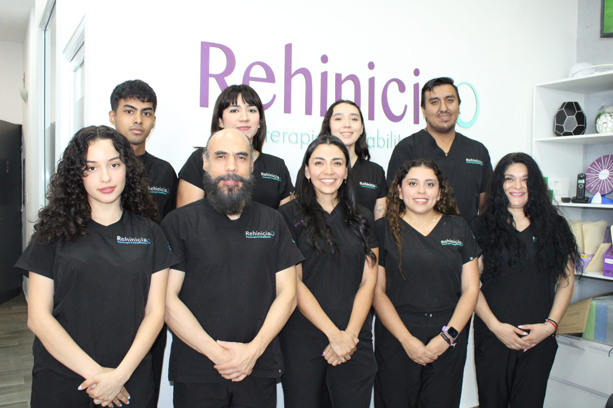
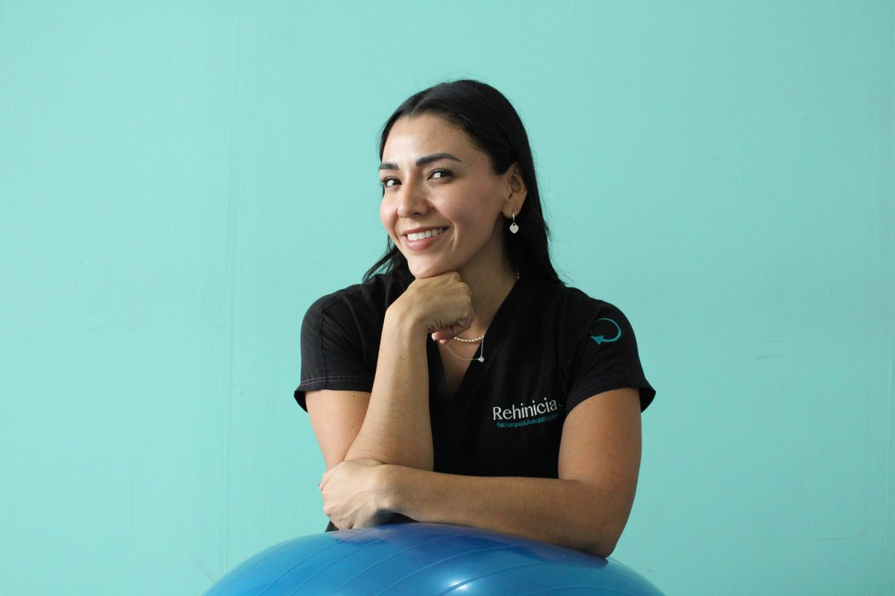

Fisioterapia
Evaluación y tratamiento de lesiones musculoesqueléticas, dolor articular y limitaciones de movimiento.
Ver más →Atención personalizada, basada en evidencia científica, para aliviar el dolor, recuperar tu movilidad y volver a tus actividades con confianza.

Combinamos conocimiento profesional, técnicas terapéuticas y tecnología especializada para acompañarte en cada etapa.
Rehinicia nace con el propósito de mejorar la calidad de vida de las personas a través del movimiento. Creemos que cada proceso de recuperación es único.
Por eso, cada tratamiento se diseña de forma individual, respetando tus tiempos, tus objetivos y tu historia clínica.

Karina Espitia es fisioterapeuta con formación en México y España, especializada en terapia manual ortopédica, dolor, ecografía y técnicas avanzadas de intervención.
Soluciones terapéuticas para cada etapa de tu recuperación. Haz clic en cada servicio para conocer más.
Evaluación y tratamiento de lesiones musculoesqueléticas, dolor articular y limitaciones de movimiento.
Ver más →Recuperación segura y progresiva tras cirugías ortopédicas o traumatológicas.
Ver más →Tratamiento especializado del dolor y la disfunción musculoesquelética.
Ver más →Técnica para el tratamiento de puntos gatillo y dolor miofascial.
Ver más →Eco-guiada: técnicas avanzadas para tendinopatías y lesiones crónicas con uso de ecógrafo musculoesquelético.
Ver más →Tratamiento de disfunciones de la ATM: dolor de mandíbula, chasquidos y bruxismo.
Ver más →Abordaje del dolor crónico y disfunciones del sistema nervioso.
Ver más →Prevención, tratamiento y readaptación de lesiones deportivas.
Ver más →Preparación y recuperación muscular para corredores y atletas.
Ver más →Programa de ejercicio terapéutico guiado para fortalecer y prevenir lesiones.
Ver más →Un proceso claro, acompañado y medible.
Conocemos tu historia, valoramos tu estado físico y definimos objetivos claros.
Diseñamos un tratamiento adaptado a tus necesidades y a tu ritmo.
Sesiones terapéuticas con monitoreo continuo de tu progreso.
Te damos herramientas para mantener los resultados a largo plazo.
Calificación 4.9 de 5 en reseñas.
“La terapia me ha ayudado mucho en cuestiones de liberación de estrés y movilidad. Muy recomendable.”
“Me gustó mucho el trato, las explicaciones y las consideraciones. Son amables, sin duda volveré.”
“Excelente servicio como siempre. Atención profesional y humana.”
Escríbenos por WhatsApp y te atendemos a la brevedad. También puedes visitarnos en nuestra clínica.